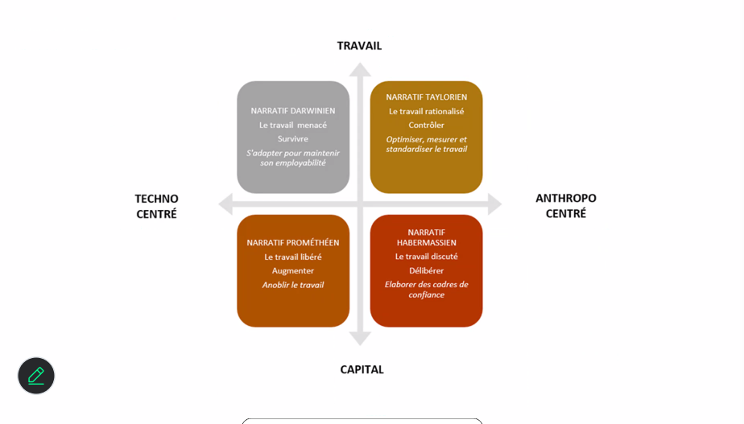
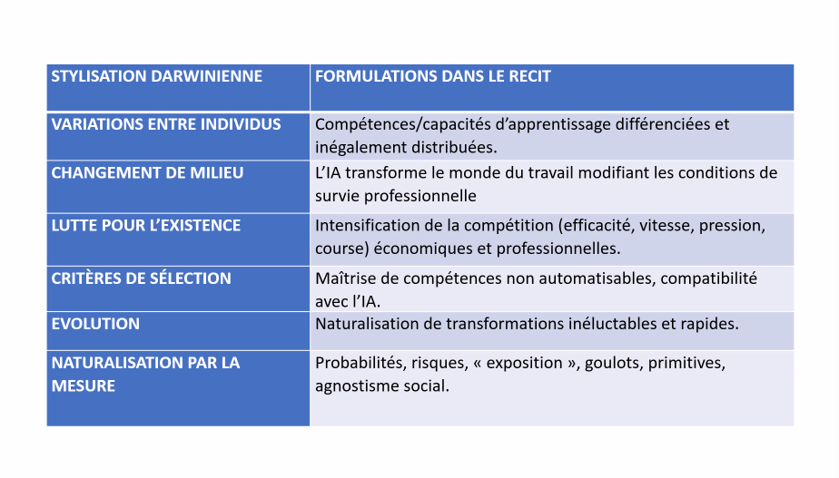
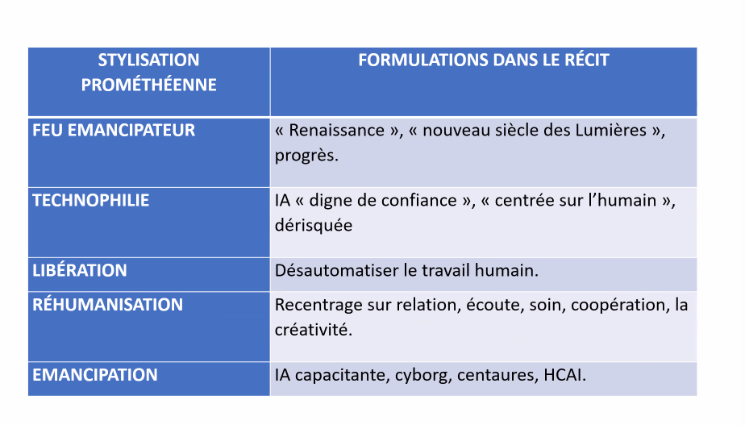
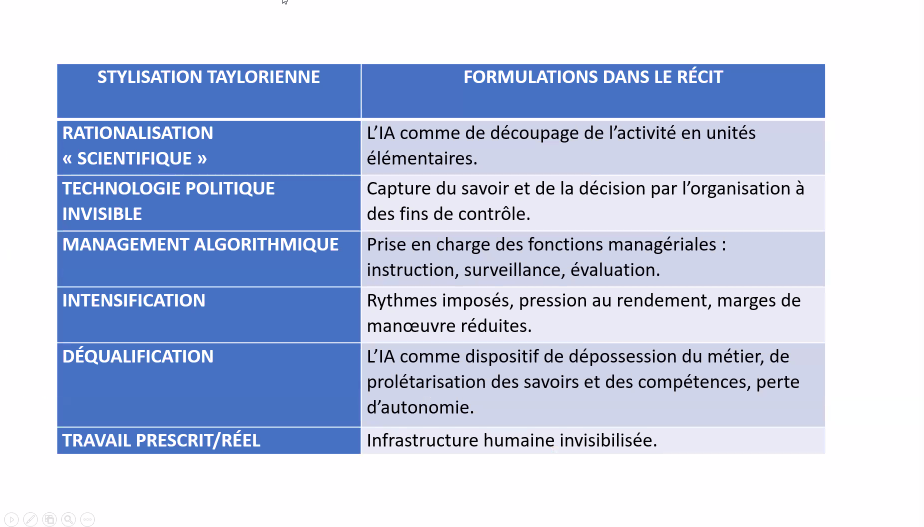
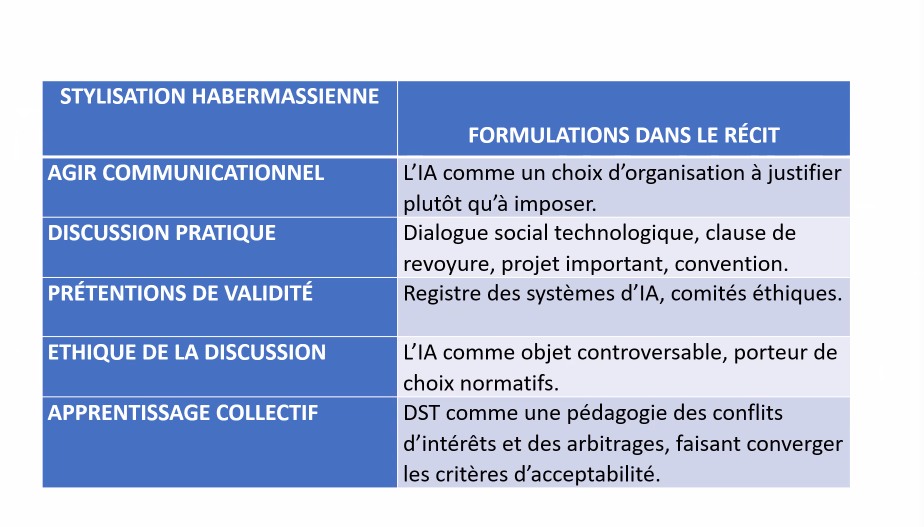
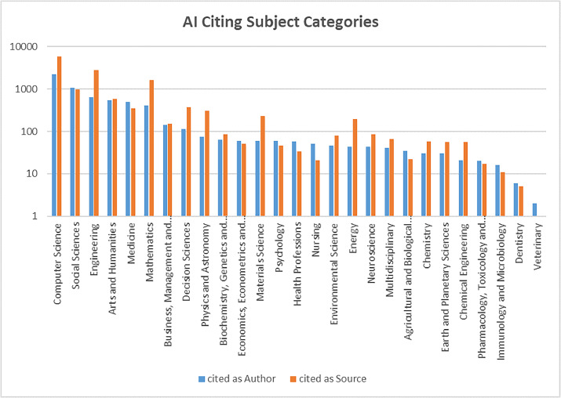

Atelier IA - Documentation des nouvelles pratiques liées à l’utilisation de l’IA : préconisations pour les SHS
![]()
2027-01-03
Plan de la session
- Introduction
- Rappels
- Constat sur les nouvelles utilisations de l’IA
- Typologie des discours sur l’IA
- Positionnement des institutions
- l’IA auteur ?
Présentation et objectif des ateliers
Format : 4 séances de 2heures, sans inscription, participation libre (à justifier pour le certificat des Humanités Numériques)
Objectifs de la série d’atelier :
- Comprendre les fondamentaux de l’IA et de son histoire
- Obtenir des notions critiques sur le fonctionnement profond des outils
- Cerner les enjeux actuels sur des thématiques qui affectent la recherche et l’enseignement
Certificat canadien en Humanités Numériques


Les fondamentaux : rappels
Qu’est ce que l’IA ?
Des programmes informatiques que nous estimons à la hauteur de l’intelligence humaine ? Le développement des technologies fait évoluer cette définition de l’intelligence non seulement artificielle mais aussi humaine.
‘IA’ depuis 5 ans, a remplacé le ‘numérique’ des années 2010, et le ‘cyberespace’ des années 1990 et 2000.(Vitali-Rosati 2025).
Définition pratique pour ces ateliers: “un programme informatique qui effectue une prédiction.”
Rappels : histoire de la discipline
- L’IA n’est pas une nouvelle discipline (terme de 1956 lors de la Dartmouth Summer Research Project on Artificial Intelligence par Marvin Minsky et John McCarthy).
- L’article Computing Machinery and Intelligence de Turing (1950) a orienté la discipline vers la création de chatbots.
- Les ‘saisons de l’IA’ suivent des phases d’approbation publique et de désintérêt pour le terme et les technologies associées.
- Changement de paradigmes actuels : de l’outil qui assiste à l’outil qui produit à l’outil qui trompe (correction orthotypo -> reformulation -> génération -> masquage de son utilisation).
- Ce qu’on fait entrer dans la catégorie d’“intelligent” a changé : le calcul savant est-il moins intelligent que le bavardage ?
Rappels : IA symbolique / IA connexionniste
- Deux grandes approches en IA : une approche déductive (IA symbolique, système expert) vs. approche inductive (IA connexionniste, modèle de langue basé sur des plongements de mots ou embeddings = vecteurs).
- Un LLM (large language model) est la modélisation sous forme de vecteurs de chaque élément d’un très grand corpus (token ~mot) par rapport à cet ensemble.
- Un système expert peut être aussi complexe et énergivore qu’un LLM.


Rappel sur les LLMs
- Chatbots type ChatGPT, Mistral, Gemini, Claude etc. = application qui utilise un LLM (la représentation figée de la langue en vecteurs) pour faire de la prédiction de tokens (génération).
- Absence de référent ou de règle : probabilité pure -> plausible et convaincant.
- Les hallucinations =/= anomalies
- Les outils reflètent les intérêts et la vision du monde de ceux qui les concoivent: correcteurs orthographiques et grammaticaux incarnent une vision du monde centrée sur la productivité et la rapidité.
- Exploitation des capacités inductives d’un LLM ne dépend pas d’une interface en langue naturelle. Ex : classification avec de l’apprentissage machine (machine learning).
Constat
Shadow AI
Shadow IA: Adoption et utilisation de l’IA dite générative sans approbation ou validation des personnes en charge.
Shadow AI is the unsanctioned use of any artificial intelligence (AI) tool or application by employees or end users without the formal approval or oversight of the information technology (IT) department. — Source: https://www.ibm.com/think/topics/shadow-ai
Statistique Canada indique que ces outils sont surtout utilisés pour l’analyse textuelle (35,7 %), l’analyse de données (26,4 %) et le déploiement d’agents conversationnels, comme les robots de clavardage (24,8 %). — Source: https://theconversation.com/pres-de-80-des-travailleurs-canadiens-utilisent-lia-sans-cadre-institutionnel-251668
“Pratiques discrètes du numérique”
F. Clavert et C. Muller : avec le numérique certaines pratiques ne sont pas ou plus documentées (comment nous arrivons à une information, comment nous organisons nos données localement etc.) (Muller 2025)
Quelles nouvelles pratiques dans la recherche ?
- production et examinuation d’un corpus : pipeline décomposée, traçable en partie (scrapping, nettoyage, OCR/HTR, nettoyage et structuration de la donnée, analyse)
- numérisation et nettoyage des données simultanément (Chagué 2026)
- production des questions de recherche et analyse simultanée, nouveau ?
- correction, reformulation : relecture humaine (imprimer son texte)
- correction experte
- reformulation
- cacher l’utilisation de l’IA générative, nouveau ?
- demande de subvention:
- ne pas créditer son assistant de recherche
- ne pas créditer ChatGPT, nouveau ?
- évaluation par les pairs:
- pas de commentaire
- “Voici l’évaluation de la proposition d’article :”, nouveau ?
Nouveauté ou exacerbation ?
Pourquoi cet outil nous bouleverse et qu’est-ce que cet outil bouleverse ? - remise en question de la superiorité humaine ?
Cerner son positionnement idéologique et narratif.
Typologie des discours autour de l’IA
Un discours marketing ?
Discours utilitariste : l’IA c’est merveilleux, ne pensez plus.
We built Cluely so you never have to think alone again. It sees your screen. Hears your audio. Feeds you answers in real time. While others guess — you’re already right.
Discours hyper niche :
today, soc 2 is done before your ai girlfriend breaks up with you. it’s done in delve.
Économie de l’attention:
Donald Boat et Donald Trump sont dans le même bateau:
He’d generated a brutally simplified miniature of the entire VC economy. People were giving him stuff for no reason except that Altman had already done it, and they didn’t want to be left out of the trend. — Kriss (2025)
“Intelligence Artificielle” terme inventé pour une demande de subvention.
Les discours de l’IA sont au coeur d’une économie de la promesse.
Quel discours tout court ?
Discours spéculatifs : “rationalistes” de Scott Alexander, catastrophisme de Yoshua Bengio, accélérationisme de la Big Tech etc.
vs. discours “critique” ?
Benbouzid, Meneceur, and Smuha (2022) : 4 arènes normatives
- posture transhumaniste et spéculative
- l’auto-responsabilisation des chercheurs développant une science régulatoire
- la critique des effets néfastes des systèmes d’IA sur les droits fondamentaux
- régulations du marché
Ferguson (2026) : Les figures narratives : construction du discours sur l’IA
Reprenant Benbouzid et Cardon : orientation des discours selon 2 axes: - Axe horizontal : agentivité des systèmes d’IA. Du techno-centrisme à la technologie comme construction sociale. - Axe vertical : capital - travail. De l’accumulation du capital à la transformation du travail.
- posture Darwinienne : Ne faites pas d’études supérieure,
- posture promothéenne : l’IA est une création
- narratif taylorien : l’IA est une manière de gagner en contrôle et pas en productivité.
- narratif Habernassienne : co-construction des systèmes d’IA

Situation des discours sur l’IA
Posture darwinienne
Mise en concurrence entre l’humain et l’IA. L’humain doit renforcer ses compétences propres. Avec une forme d’agnostisme social et objectivité dans l’impact de l’IA sur le travail.

effet stylisation du discours sur l’IA Darwin
Posture promothéenne
“renaissance”, les cyborgs, les centaures, les hybridations avec la machine promettent à l’humain des capacités sur-humaines, une libération.

discours promethéen
Posture taylorienne
L’IA est une manière de gagner en contrôle et pas en productivité. Rationalisation scientifique, mise à distance critique. Lecture de l’IA dans une continuité. Ex: les diapos précédentes

discours taylorien
Posture habernassienne
Co-construction des système d’IA : ex : prise de décision collective etc. L’IA comme choix d’organisation à justifier, comme objet controversé. Paradigme émergent et pas encore dominant. Le cadrage est celui du : il y a un bon discours sur l’IA.

discours habernassien
Situation personnnelle
Narratif darwinien: - inévitabilité de l’IA - mise en concurrence des humains entre eux renforcé par les IA
Narratif prométhéen: - …
Narratif taylorien : - l’IA ne fait qu’exacerber les structures de contrôle,
Narratif habernassien: - (Schäfer and Mäkelä 2025) se baser sur le breakage, repair, renew framework de Jackson (2014) : importance des guidelines pour la literatie numérique mais aussi importance du dialogue avec les média grand public pour entrer dans une logique de réparation, de mise en évidence des dégâts, et actuellement, une phase de “renouveau” au sens où la démocratie peut entrer en coopération avec la technologie. - sensibilisation, formation. s
Où vous situez-vous ?
Positionnement et préconisations des institutions
Multiplication des chartes et cadres éthiques
(Benbouzid and Cardon 2022) : principalisme : > les cadres moraux théoriques sont produits de manière déductive à partir de principes abstraits, puis appliqués aux pratiques. Il est reproché au principalisme de ne pas prendre suffisamment en compte les particularités de ces algorithmes et le contexte de leur mise en oeuvre.
- communautés voire disciplines : Fair Machine Learning (Fair ML) et Explainable AI (XAI)
“Institutionnalisation”
Pour une institutionnalisation efficace de l’IAG, nous proposons trois points complémentaires. - L’élaboration de politiques d’utilisation explicites, communiquées et régulièrement mises à jour, permet de clarifier les frontières entre usages autorisés et proscrits. - La formation et la sensibilisation constituent des leviers essentiels : les employés doivent développer non seulement des compétences techniques en matière de rédactique, mais également une compréhension profonde des enjeux organisationnels, éthiques et de sécurité. - Le choix et la mise en place d’outils d’IAG approuvés et sécurisés, notamment alignés sur les besoins de l’entreprise et sur la loi. Comme le souligne KPMG, les organisations avant-gardistes « transforment l’utilisation non autorisée de l’IA en un avantage stratégique et en un moteur d’innovation » (traduction libre). — Agbon and Nguegang (2026)
Organisations supra-nationales
Ex: Parlement européen, Assemblée parlementaire du Conseil de l’Europe, l’agence européenne des droits fondamentaux (FRA), l’Organisation pour la Sécurité et la Coopération en Europe (OSCE), le Partenariat Mondial pour l’Intelligence Artificiel (PMIA), la Banque Mondiale ou l’Organisation Mondiale de la Santé (OMS).
- Rapports
Puis lois ex: Artificial Intelligence Act de juin 2024. (“Regulation (EU) 2024/1689 of the European Parliament and of the Council of 13 June 2024 Laying down Harmonised Rules on Artificial Intelligence and Amending Regulations (EC) No 300/2008, (EU) No 167/2013, (EU) No 168/2013, (EU) 2018/858, (EU) 2018/1139 and (EU) 2019/2144 and Directives 2014/90/EU, (EU) 2016/797 and (EU) 2020/1828 (Artificial Intelligence Act) (Text with EEA Relevance)” 2024)
Le gouvernement canadien
Léglislation : Artificial Intelligence and Data Act (2022-2024)
Controversé car jugé insuffisant dans les mesures de protection du public et des employés. Rejeté en 2024.
Code de conduite volontaire visant un développement et une gestion responsables des systèmes d’IA générative avancés, 2023.
-> Responsabilisation des individus et entreprises sur la base du volontariat, quelle efficacité face aux grandes entreprises ?
Guide sur l’utilisation de l’IA générative
Canada: Canada, S. du C. du T. du. (2024, mai 30). Guide sur l’utilisation de l’intelligence artificielle générative. https://www.canada.ca/fr/gouvernement/systeme/gouvernement-numerique/innovations-gouvernementales-numeriques/utilisation-responsable-ai/guide-utilisation-intelligence-artificielle-generative.html
-> à destination des institutions fédérales
Typologie des usages à risque:
Les risques liés à l’utilisation de ces outils dépendent de ce à quoi ils serviront et des mesures d’atténuation en place.
Exemples d’utilisations à faible risque :
rédiger un courriel pour inviter des collègues à une activité de renforcement de l’esprit d’équipe;
réviser l’ébauche d’un document qui fera l’objet d’examens et d’approbations supplémentaires.
Exemples d’utilisations à risque plus élevé (comme les utilisations dans la prestation de services) :
déployer un outil (par exemple, un robot conversationnel) à l’intention du public;
produire un résumé des renseignements d’un client.Principes PRETES:
- Pertinente
- Responsable
- Équitable
- Transparente
- Éclairée
- Sécurisée
Pratiques exemplaires pour tous les utilisateurs de l’IA générative dans les institutions fédérales - Indiquer clairement que vous avez utilisé l’IA générative pour élaborer du contenu. - Ne pas considérer le contenu généré comme faisant autorité. Vérifier l’exactitude des faits et du contexte, par exemple en les comparant à des renseignements provenant de sources fiables ou en demandant à un collègue ayant de l’expertise d’examiner la réponse. - Vérifier les renseignements personnels créés à l’aide de l’IA générative afin de veiller à ce qu’ils soient exacts, à jour et complets. - Évaluer l’incidence des résultats inexacts. Ne pas utiliser l’IA générative lorsque l’exactitude des faits ou l’intégrité des données est nécessaire. - S’efforcer de comprendre la qualité et la source des données d’apprentissage. - Penser à votre capacité à relever les contenus inexacts avant d’utiliser l’IA générative. Ne pas l’utiliser si vous ne pouvez pas confirmer la qualité du contenu. - Apprendre à créer des messages-guides efficaces et à fournir un retour d’information pour affiner les résultats afin de limiter la production de contenu inexact. - N’utilisez pas d’outils d’IA générative comme moteurs de recherche à moins que des sources soient fournies pour que vous puissiez vérifier le contenu.
Canada (2024)
Conseil consultatif en matière d’intelligence artificielle
Depuis 2019.
Orientation du conseil à l’été 2025: > les membres du Conseil ont souligné l’intérêt de réutiliser les outils au code source ouvert, de mesurer l’impact de l’IA et de déployer à l’échelle du gouvernement les applications qui ont fait leurs preuves afin d’éviter de réinventer la roue. Ils ont également suggéré que le gouvernement aurait tout intérêt à renforcer sa collaboration avec le secteur privé pour mettre en œuvre la stratégie, mais que cela nécessiterait le retrait de certains obstacles, tels que la complexité des règles d’approvisionnement.
« L’IA pour la prospérité », qui met l’accent sur l’adoption, l’intersection entre l’IA et l’énergie, et l’inclusion numérique.
(Conseil consultatif en matière d’intelligence artificielle 2025)
Stratégie pancanadienne en matière d’IA
3 pilliers : - Commercialisation (appui aux instituts nationaux comme le MILA) - Normes - Talents et recherche (via CIFAR)
Les entreprises
Dubber, Pasquale, and Das (2020) : - un écart entre la preuve de concept, le prototype et le déploiement de grande échelle -> - possibilité de régulation de l’infrastructure industrielle vs. régulation des services permis par cette infrastructure (ex: banque, compagnies aériennes) - modèles alternatifs comme Wikipédia peuvent (grâce à l’anonymat) limiter les incitatifs à l’autopromo.
guardrail failures are features not bugs: they are created by the incentives built into the algorithm.
Ex: les “phantom requests” sur über, sans possibilité de recours, baissent les notes des chauffeur.se.s qui perdent leurs bonus. über se défend en maintenant le discours du ‘bug’.
The pairing of the algorithms and guardrails tempts companies to engage in regulatory arbitrage, providing a requirement for external action. — Dubber, Pasquale, and Das (2020)
-> risques d’ingérences politiques accru avec l’invisibilisation et l’adoption massive de systèmes d’IA propriétaires.
Universités
Udem
Une boîte à outils et des formations : https://boite-outils.bib.umontreal.ca/trouver-evaluer/iag
Un propos fort et répété:
Il est important de consulter les plans de cours pour vérifier si l’utilisation des outils d’IAg est permise et les modalités d’utilisation qui sont acceptées. Sans autorisation explicite, ces outils sont réputés interdits.
Université de Liège
Usages permis: - assistant linguistique - assistant de recherche d’information
Il va de soi que votre université vous encourage par ailleurs à exploiter l’IA, dans votre sphère personnelle, pour accompagner votre étude et consolider votre maitrise des matières !
Usages proscrits: >Présenter la production d’une IA comme la sienne propre ou celle d’un condisciple car ce faisant: > - vous vous appropriez malhonnêtement le travail d’autrui ou vous ignorez les sources vraies qui ont conduit au résultat présenté. > - vous développez une forme de paresse intellectuelle > - vous empêchez l’enseignant d’évaluer correctement les connaissances, compétences, attitudes que le travail est censé refléter.
Université de Liège (2023)
Éditeurs
Springer s.d. et Elsevier depuis septembre 2025 distinguent une utilisation par les auteur.ice.s et une utilisation par les évaluateur.ice.s.
- Une utilisation autorisée pour la correction plus ou moins mineure du texte, sans définition claire entre correction et édition.
“AI assisted copy editing” as AI-assisted improvements to human-generated texts for readability and style, and to ensure that the texts are free of errors in grammar, spelling, punctuation and tone. These AI-assisted improvements may include wording and formatting changes to the texts, but do not include generative editorial work and autonomous content creation. In all cases, there must be human accountability for the final version of the text and agreement from the authors that the edits reflect their original work. — Springer
- Une attribution autoriale qui reste strictement humaine
Authors preparing a manuscript for an Elsevier journal can use AI Tools to support them. However, these tools must never be used as a substitute for human critical thinking, expertise and evaluation. AI Tools should always be applied with human oversight and control. — Elsevier
- Interdiction totale pour l’aide à l’évaluation :
Reviewers should not upload a submitted manuscript or any part of it into a generative AI tool as this may violate the authors’ confidentiality and proprietary rights and, where the paper contains personally identifiable information, may breach data privacy rights.
This confidentiality requirement extends to the peer review report, as it may contain confidential information about the manuscript and/or the authors. For this reason, reviewers should not upload their peer review report into an AI tool, even if it is just for the purpose of improving language and readability.
Question épineuse de l’attribution autoriale
Positionnement clair du Committee on publication Ethics (COPE)(Committee on Publication Ethics 2024) : > AI tools cannot be listed as an author of a paper.
Authors should not list AI Tools as an author or co-author, nor cite AI Tools as an author. Authorship implies responsibilities and tasks that can only be attributed to and performed by humans — Elsevier
vs. une nouvelle pratique : ex Generative Pre-trained Transformer and Zhavoronkov (2022) : a modifié la liste de co-auteur pour mentionner seulement Zhavoronkov.
Citer l’IA
Guidelines de la MLA, Chicago et APA pour citer l’utilisation de l’IA.
Gorraiz (2025) : rappelle la notion fondamentale de “invisible college” des premières sociétés savantes. Selon lui, utilisation de moins en moins invisibilisée des IA, ce qui contredit le discours actuel du “Shadow AI”.
- recherche menée sur corpus WoS et Scopus jusqu’à oct. 2024 avec recherche de “openAi, ChatGPT et Perplexity”.
- 12 articles listent un des 3 termes comme co-auteur.
- apparition dans la bibliographie et dans les remerciements :
- on cite plus souvent “openAI” que “ChatGPT”
- 816 citations bibliographiques, soit comme auteur, soit comme source (ex: Anonyme, 2024).
- Observation du type de citation par discipline montre les divergence de perception de l’IA :
The predominance of citations listing AI as an author in Computer Science and Social Sciences suggests that AI is becoming an active contributor to content generation within these fields. On the other hand, the trend of citing AI more frequently as a source in Environmental Science and Earth and Planetary Sciences indicates that AI’s role in these disciplines is more focused on data analysis rather than content creation. This variation in citation practices across disciplines highlights AI’s evolving role. Some fields seem to lean toward acknowledging AI as a source of information, while others are increasingly embracing AI as a formal co-author.

Type de citation par discipline
Citer l’IA : limites
Gorraiz (2025) : - subvertion du principe de la citation qui est une reconnaissance du travail d’un collègue “sur les épaules d’un géant” - contradiction avec l’interdiction de reconnaissance de l’autorialité des IA. - suggère plutôt de se servir des remerciements - aucune assurance que les auteur.ice.s suivent les exigences de transparence des revues etc.
Bibliographie

Alexia Schneider - Debogue tes humanités 2026